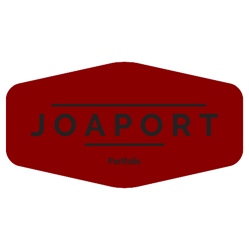

JoaPort, un site dédier à présenter les projets que j'ai réaliser.
Projet
Réalisations effectuer pour mon compte personnel afin de pouvoir m'entrainer et mettre en pratique ce que j'ai pu et continu à apprendre. Réalisations effectuer pour le compte de ma formation et vous pourrez aussi voir les projet professionels sur les quelles je travail ou ai travaillais dessus.
Éxpérience
Bien qu'aujourd'hui je fais en sorte de devenir dévellopeur web je suis passer par beaucoup de métiers avant d'en arriver là. CV mis en forme pour que vous puissiez comprendre mon éxpérience et le pourquoi j'en suis arriver à vouloir devenir devellopeur web.
Contact
N'hésiter pas à me contacter pour toutes questions relative à un projet.